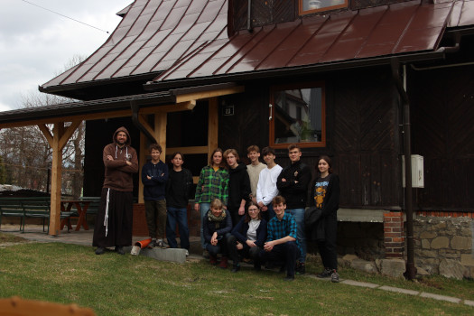
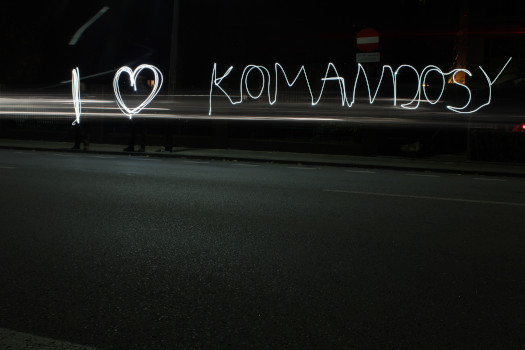

Życie prywatne, zawodowe, rozwój osobisty
W kwietniu ukończyłem 19 lat, kończę czwartą klasę Zespołu Szkół Energetycznych w Krakowie na profilu informatycznym. Wraz z początkiem czerwca zmagałem się z drugim już egzaminem zawodowym, który zdałem na ??%. Tak jak mówię od dawna, mój profil to strzał w dziesiątkę, nauka materiału szkolnego sprawia mi dużą przyjemność. W kwietniu odbyłem praktyki zawodowe w IBM, miałem taką możliwość dzięki wynikom, gdyż nasza szkoła co roku oferuje szóstce najlepszych uczniów praktyki w tej firmie. Po tym miesiącu wiem, że w przyszłości nie chcę pracować w tego typu korporacji, na szczęście w sierpniu idę na staż wakacyjny do firmy, w której byłem rok temu na praktykach zawodowych, gdzie bardzo mi się podobało, a ponadto firma zaproponowała abym odezwał się do nich po maturze.
Również od kiedy pamiętam prawo jazdy było moim marzeniem, niestety nie miałem możliwości aby je zrobić zaraz po ukończeniu osiemnastu lat, dlatego od września zatrudniłem się w drukarni przemysłowej i sukcesywnie zarabiałem pieniążki. Udało mi się zebrać na prawo jazdy w grudniu ubigłego roku, więc od razu zacząłem kurs. Dzięki szybkim terminom i dyspozycyjności instruktora udało mi się trzeciego marca odebrać dokument.
Ponadto dzięki pracy udało mi się zarobić na tablet, który regularnie wykorzystuję do nauki, na aparat, który pozwala mi rozwijać pasję do fotografii oraz na pokrycie kosztów wyjazdu ze znajomymi w ferie (byłem pierwszy raz za granicą :P). Od kwietnia stwierdziłem, że chciałbym spróbować znaleźć coś bliżej zawodu, zwłaszcza, że sporo osób mówiło, że mam ku temu predyspozycje. Dlatego napisałem porządne CV i wysłałem do kilku firm, już następnego dnia dostałem odpowiedź od firmy działającej w Krzeszowicach, czyli bardzo blisko mojego domu. Nie jest to jeszcze praca moich marzeń, gdyż dokonuję tam drobnych poprawek na stronie i zarządzam danymi w bazie, a w przyszłości chciałbym programować, ale sprawia mi przyjemność i pozwala bez problemu połączyć ją z nauką.
Od dawna też chciałem należeć do Wspólnoty, w lutym Dziewczyna mi pokazała Duszpasterstwo Akademickie "Nazaret. Odnowa w Duchu Świętym", chodzę regularnie co tydzień w czwartek na spotaknia formacyjne oraz we wtorki na Uwielbienia organizowane przez Wspólnotę.
Ponadto, mój opiekun zaraził mnie zapałem do ścianki wspinaczkowej przez co w kwietniu zakupiłem buty do wspinania, staram się przynajmniej raz w tygodniu pójść przed lekcjami.
Wraz w końcem ferii zacząłem chodzić na kurs tańca, teraz jestem w trakcie realizacji czwartego z siedmiu stopni. W przeszłości na dyskotekach zawsze "podpierałem ścianę" i żałowałem, że nie umiem tańczyć. Od momentu rozpoczęcia kursu byliśmy z Dziewczyną na Balu i Przyjęciu po Prymicjach, na obydwu tych imprezach spotkaliśmy się z miłym słowem odnoszącym się do naszego tańca.
Harcerstwo
Jestem w harcerstwie od 8 lat, po dwóch latach przejąłem zastęp, który prowadziłem do 2020 roku. W tym czasie udało nam się stworzyć drugi zastęp w Bronowicach, czyli tam gdzie działałem. Zielony sznur dostałem w październiku 2019 roku, od tego czasu działam aktywnie jako przyboczny 7 KDH Komandosy w Hufcu Harcerzy Kraków Wawel. W 2021 roku byłem na XXVI śródrocznej edycji kursu ŻAR a później na kursie instruktorskim, od roku jestem przewodnikiem. W drużynie obecnie mamy 4 przybocznych na 30-osobową drużynę, dzięki dwóm instruktorom jesteśmy na wyjazdach niezależni od wychowawców z zewnątrz. Obecny dryżynowy prowadzi ją od października 2020 roku, planujemy przekazanie na najbliższy wrzesień na biwaku drużyny. Widzę wśród obecnych zastępowych mojego następce, nawet udało mi się przez przypadek kiedyś porozmawiać z nim o stopniach instruktorskich i powiedział, że planuje w wieku 17 lat otwierać stopień przewodnika. Osobiście chciałbym prowadzić drużynę rok albo dwa i następnie zaangażować się bardziej w szczep, nie wykluczam, że go kiedyś przejmę.
Instruktorsko rozwijam się w hufcu jako sekretarz oraz szef szkoły zastępowych. Członkiem komendy jestem od września 2022 roku, natomiast od roku jestem w składzie kapituły HO działającej przy naszym hufcu i hufcu Stare Miasto. Niestety ostatnimi czasy nie byłem w stanie się angażować więcej, ponieważ spotkania były w czwartki, które były dla mnie bardzo pracowite. Jestem również opiekunek jednego stopnia HO, przybocznego w mojej drużynie.
Hobby
Moim największym zainteresowaniem cieszą się góry oraz wędrówka górskimi szlakami. Nie mogę nie wspomnieć, o tym że w kwietniu udało mi się w końcu pojechać pierwszy raz w życiu w Tatry. Nie były to co prawda Rysy, ale udało mi się dotrzeć na Kasprowy Wierch, Staw Gąsienicowy oraz zobaczyć wiele szczytów, gdyż pogoda dopisała.
Poniekąd w parze z wędrówkami i pięknymi widokami idzie kolejne moje zainteresowanie. Już od dłuższego czasu gdy tylko miałem możliwość na jakimś wyjeździe to pożyczałem aparat, aby porobić parę zdjęć. Tak jak pisałem wcześniej, dzięki pracy w drukarni udało mi się kupić własny, który zabieram teraz ze sobą na każdy wyjazd. Najbardziej lubię fotografować przyrodę począwszy od krajobrazów, przez wschody i zachody, a kończąc na nocnych ujęciach z długim czasem naświetlania. Również dzięki temu moja drużyna ma spory album po każdym dłuższym wyjeździe z czym zawsze był problem.
Kolejne zaintresowanie jest mocno związane z profilem, na którym się znajduję. Bardzo lubię informatykę a szczególną przyjemność sprawia mi programowanie. Mowa konkretnie o tworzeniu aplikacji webowych, począwszy od warstwy widocznej i integralnej z użytownikiem, przez część serwerową. Prostym przykładem będzie ta witryna albo raport ze stopnia instruktorskiego również napisany w formie strony internetowej. Na stopień Harcerza Orlego stworzyłem stronę dla drużyny, która przez mały rozgłos nie jest prowadzona regularnie (ale sukcesem jest aktualna galeria i skrypty z technik pisane przez Naszych harcerzy)
Również szeroko pojęty aktywny tryb życia mi odpowiada. Regularnie teraz tylko chodzę na ściankę i tańczę (to również jest wysiłek :P) ale często zdarza mi się porwać na rower, rolki, spacer, basen i wiele więcej tego typu wydarzeń. Jeśli tylko mam czas to nigdy nie odmawiam :D.